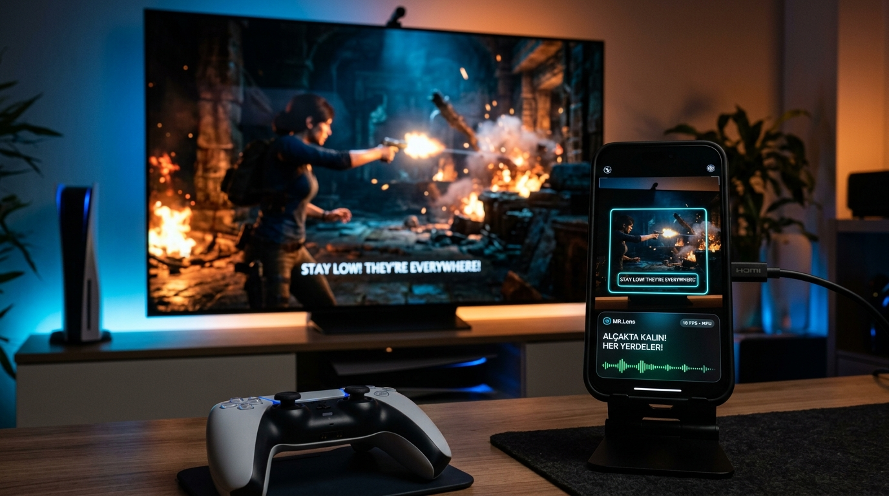
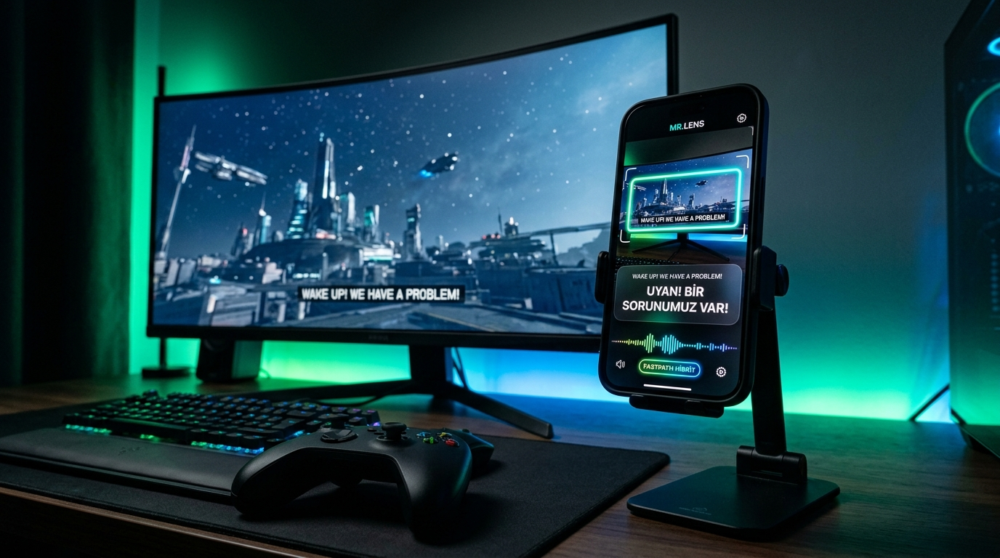
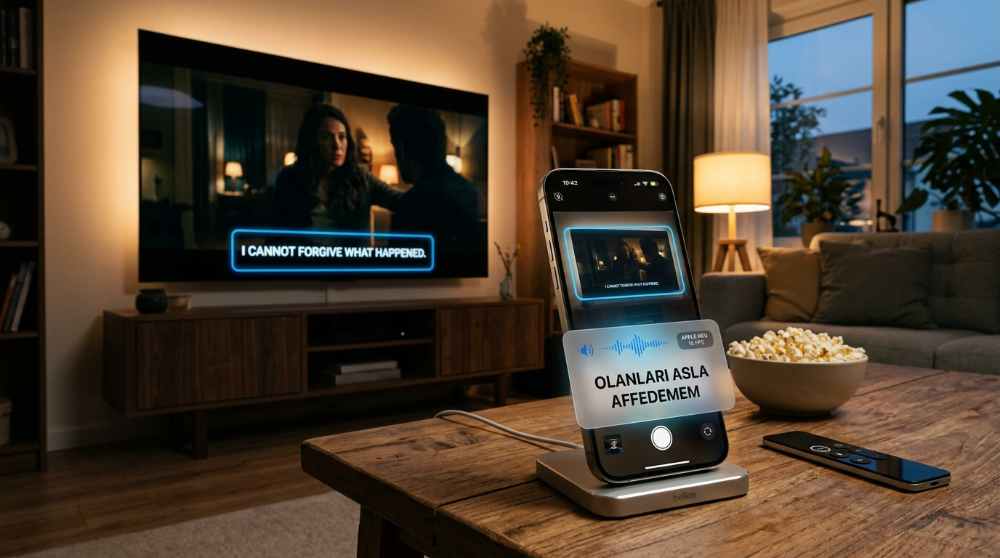
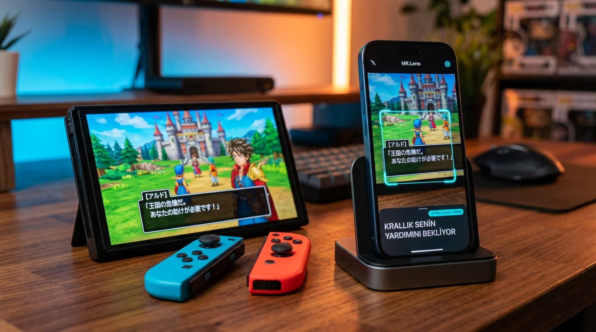
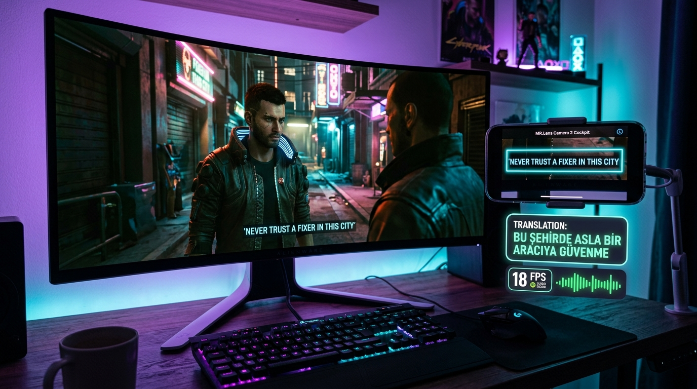
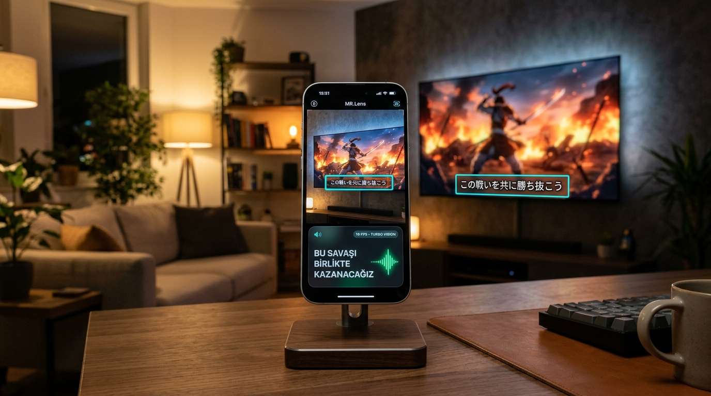

Konsol ve PC Oyunlarını
Anında Türkçe
Oyna ve Dinle.
18 FPS Turbo Vision OCR, 3-Kademeli Sıfır Gecikmeli Çeviri Mimarisi ve Yapay Zeka Stüdyo Dublajı ile TV ve monitörünüzdeki her oyunu yerinde Türkçeleştirin.
Gerçek Dünyada MR.Lens: Ekran Karşısında Canlı Kullanım
PlayStation 5, Xbox, PC, Nintendo Switch veya TV'deki yabancı film ve diziler... iPhone'unuzu ekranın karşısına koyun, MR.Lens anında Türkçeleştirsin.

DualSense & TV Karşısında Sıfır Gecikme

Konsol Monitöründe 1:1 Bounding Box

Yabancı Dizi ve Filmleri Türkçe Dinleyin

Japonca Oyunları Anında Türkçeleştirin

Geniş Monitörde MagSafe Kol Entegrasyonu

Karmaşık Japonca Cümleleri Tek Hamlede Çözün
En Sevdiğiniz Oyunlar Kendi Dilinizde
MR.Lens, oyun dünyasının en karmaşık RPG jargonlarını, hızlı aksiyon repliklerini ve açık dünya maceralarını tanıyacak şekilde optimize edildi.
Grand Theft Auto VI
Vice City suç dünyası, hızlı araba içi diyalogları ve sokak argoları.
Cyberpunk 2077
Night City jargonu, Fixer, Cyberware ve Braindance teknik terimleri.
God of War Ragnarök
İskandinav mitolojisi, Kratos ve Atreus'un derin dramatik diyalogları.
Elden Ring
Arkaik ve şiirsel İngilizce cümleler, karmaşık Souls-like hikaye parçaları.
The Last of Us Part I & II
Post-apokaliptik hayatta kalma, fısıltı ve bağırış arasındaki dinamik diyaloglar.
Red Dead Redemption 2
1899 Vahşi Batı dönemi kovboy argoları ve at üstünde geçen uzun sohbetler.
Baldur's Gate 3
Devasa D&D evreni, 2 milyondan fazla diyalog kelimesi ve büyü isimleri.
Zelda: Tears of the Kingdom
Hyrule krallığı, Japonca ve İngilizce diyaloglar, taşınabilir ekran modu.
Özel Oyun Çeviri & Senaryo Paketleri Merkezi
Popüler oyunlar için 0.01 ms sıfır gecikmeli, internet gerektirmeyen yerel JSON senaryo paketlerini tek tıkla indirin ve uygulamaya yükleyin.
Yeni Nesil Oyun Erişilebilirliği
Sıradan çeviri araçları oyun hızına yetişemez. MR.Lens, Apple Silicon NPU ve özel oyun sözlüğü ile oyuncular için tasarlandı.
18 FPS Turbo Vision OCR
Hızlı sahne geçişlerinde ve tek kelimelik ani repliklerde bile altyazıyı milisaniyeler içinde yakalayan donanımsal ANE tarama hızı.
3-Kademeli Hibrit Çeviri
1M+ SQLite Oyun Sözlüğü (<0.5ms) → Çevrimdışı Apple NPU (15ms) → Gemini 3.5 Flash Lite BYOK akıllı yedekleme hattı.
Yapay Zeka Stüdyo Dublajı
ElevenLabs, OpenAI ve Apple TTS motorlarıyla karakterlerin ses tonunu ve cinsiyetini tespit ederek anlık Türkçe seslendirme.
Kamera 2 Kokpit Ekranı
Oyun ekranınızı kapatmayan, ekranın alt kısmında akıcı HUD kartları şeklinde dizilen 1:1 donanım uyumlu tasarım.
Mac Companion & Konsol
PlayStation 5, Xbox ve Nintendo Switch TV ekranları veya doğrudan Mac ekran akışı (Remote Stream) üzerinden tam senkronizasyon.
%100 Gizlilik & BYOK
Verileriniz cihazınızda kalır. İster tamamen internetsiz çevrimdışı motoru, ister kendi Gemini API anahtarınızı sınırsızca kullanın.
Karakterlerin Sesine Kulak Verin
MR.Lens, ekrandaki konuşmacının cinsiyetini ve ses perdesini otomatik tespit ederek uygun yapay zeka tonunu anında seslendirir. Aşağıdaki motorları canlı dinleyin:
ElevenLabs — Karizmatik Erkek Tonu
Örnek: Kratos, Geralt, Arthur MorganElevenLabs — Cesur Kadın Karakter
Örnek: Ciri, Ellie, Lara CroftOpenAI Onyx — Derin Anlatıcı Tonu
Örnek: Belgesel, RPG Girişleri, Lore AnlatımıApple NPU — Hızlı Çevrimdışı Dublaj
Örnek: Telsiz Anonsları, Çatışma UyarılarıNeden MR.Lens?
Geleneksel ekran çeviriciler ile MR.Lens mimarisi arasındaki farklar.
| Özellik | Klasik Çeviriciler | MR.Lens v0.90 |
|---|---|---|
| Yenileme Hızı (FPS) | 1 - 2 FPS (Gecikmeli) | 18 FPS Turbo ANE |
| Çeviri Gecikmesi | 1500 - 3000 ms | 12 - 50 ms (Anlık) |
| Oyun Terimleri & Lore | Standart Genel Sözlük | 1M+ Oyun Senaryo Sözlüğü |
| Sesli Dublaj | Yok veya Robotik | 5 Motorlu Akustik Dublaj |
| Ekran Düzeni | Oyunun Üstünü Kapatır | Kokpit HUD Kartları |
| İnternetsiz Çalışma | İmkansız (Sürekli Cloud) | %100 Yerel NPU Desteği |
3 Adımda Başlayın
Herhangi bir karmaşık ayar veya kablo olmadan saniyeler içinde oynamaya başlayın.
1. Kamerayı Doğrult
iPhone'unuzu TV veya monitörünüzün altyazı alanına hizalayın ya da Mac Companion ile bağlanın.
2. Modunu ve Sesini Seç
Kamera 1 Tam Ekran veya Kamera 2 Kokpit HUD modunu belirleyin; dublaj ses motorunuzu aktifleştirin.
3. Oyunun Tadını Çıkar
18 FPS akışla anlık Türkçe altyazıların ve stüdyo dublajının keyfini çıkarın!
MR.Lens Yol Haritası
Konsol ve PC oyuncularına sıfır gecikmeli Türkçe deneyimi yaşatmak için sürekli genişleyen teknoloji yolculuğumuz.
Çekirdek Motor & ANE v0.90
iPhone donanımını sınırlarına kadar zorlayan temel OCR ve yerel NPU çeviri motoru inşa edildi.
- 18 FPS Apple Neural Engine Turbo Vision OCR
- 1.000.000+ Terimli SQLite Çevrimdışı Oyun Sözlüğü
- Kamera 1 (HUD) & Kamera 2 (Yatay Kokpit) Modları
- AVSpeech Akustik Sesli Dublaj Motoru
App Store Lansmanı & BYOK
Global lansman hazırlıkları, bulut zekası ve macOS Companion kararlılık optimizasyonları.
- App Store Genel Yayını (Son İnceleme Aşamasında)
- Gemini 3.5 Flash Lite BYOK (Kendi API Anahtarın)
- macOS Companion Kablosuz Ekran Akışı
- Topluluk Öneri & Geri Bildirim Portalı
Oyun Senaryo Paketleri & 0ms
AAA oyunlar için el yapımı profesyonel diyalog indeksleri ve sıfır milisaniye tanıma devrimi.
- Özel Oyun Senaryo Paketleri (GTA VI, Witcher 3, Cyberpunk)
- 0 ms Anlık Tanıma: Ekranda çıktığı an milisaniyede eşleşme
- Kullanıcı Sözlük Paylaşım Topluluğu (Community Workshop)
- Diyalog Konuşmacı Ayrımı (Speaker Diarization)
Stüdyo Dublaj & Çoklu Platform
Önceden kaydedilmiş aktör kalitesinde seslendirme paketleri ve Windows/Android desteği.
- Önceden Derlenmiş Oyun Stüdyo Dublaj Paketleri
- Windows PC Companion Desteği (Ultra-Low Latency)
- Android Erken Erişim & NPU Adaptasyonu
- Apple Vision Pro Uzamsal HUD Entegrasyonu
Mükemmel Deneyim İçin Tavsiyeler
MR.Lens'i en yüksek hassasiyet, sıfır sarsıntı ve sinematik sesle kullanmak için uzman ipuçları.
İdeal Mesafe & Açı
iPhone'unuzu TV veya monitörden 1.0 - 2.5 metre mesafede, ekranın altyazı alanına hafif yukarı açıyla konumlandırın. Küçük bir masa tripodu veya MagSafe standı sıfır sarsıntı ve kesintisiz 18 FPS takip sağlar.
AirPods & Sinematik Dublaj
AirPods veya düşük gecikmeli Bluetooth kulaklık takarak sesli dublajı aktifleştirin. Oyunun müzik ve patlama sesleri TV hoparlörünüzden gelirken, Türkçe karakter dublajı kulağınıza anında ve kristal netliğinde fısıldanır.
OLED & Işık Optimizasyonu
Odanızda ekrana doğrudan vuran parlak avize ışıklarını engelleyin. MR.Lens'in HDR Adaptif Pozlama algoritması, en karanlık zindan sahnelerinde veya parlak neon cyberpunk sokaklarında bile altyazıyı net yakalar.
Kablo Yok, Konsol Modu Yok, Ban Riski Sıfır
MR.Lens konsolunuzun veya PC'nizin hiçbir dosyasına müdahale etmez; optik kamera ve yapay zeka ile %100 harici çalışır.
Sıkça Sorulan Sorular
MR.Lens'in donanım entegrasyonu, 18 FPS ANE mimarisi, çevrimdışı motoru, gizlilik ve dublaj teknolojisi hakkında tüm detaylar.
FastVisionOCRService ve piksel delta filtresi (PixelDeltaGatekeeper) sayesinde saniyede 18 defaya kadar (0.056 saniye aralıkla) dinamik tarama yapar. Altyazı ekranda belirdiği an 11-15 milisaniyede yakalanır.
Kamera 2 (Kokpit HUD Modu): Oyuncuların en çok tercih ettiği moddur. Ekranı ikiye böler; üstte TV'nin altyazı alanı 1:1 netlikle izlenirken, altta oyun atmosferini ve görüş alanını engellemeyen şık, yarı saydam, ses dalgası destekli HUD bilgi kartları akar.
FastPathLexiconService) ve Apple Neural Engine (NPU) çeviri motoru tamamen cihazınızda internetsiz çalışır. Dağ evinde, uçakta veya internetiniz kesildiğinde bile sıfır gecikmeyle (%100 offline) oyun oynamaya devam edebilirsiniz.
Aklınızda başka bir soru veya oyun önerisi mi var?
Geliştirici ekibimize doğrudan yazın veya erken erişim bültenimize katılın.
MR.Lens Deneyimine Katılın & Şekillendirin
İster erken erişimle ilk deneyimleyenlerden olun, ister geliştirme sürecine önerilerinizle doğrudan yön verin.
Erken Erişim Başvurusu
App Store genel yayınından önce TestFlight beta programına katılın. Yeni oyun motorlarını, 18 FPS Turbo Vision'ı ve stüdyo dublajını ilk siz test edin.
Geliştirme Sürecine Katkıda Bulunun
MR.Lens'te görmek istediğiniz özellikleri, yeni oyun desteği taleplerinizi veya platform fikirlerinizi (iOS, Android, macOS, Windows) doğrudan geliştirici ekibine iletin.